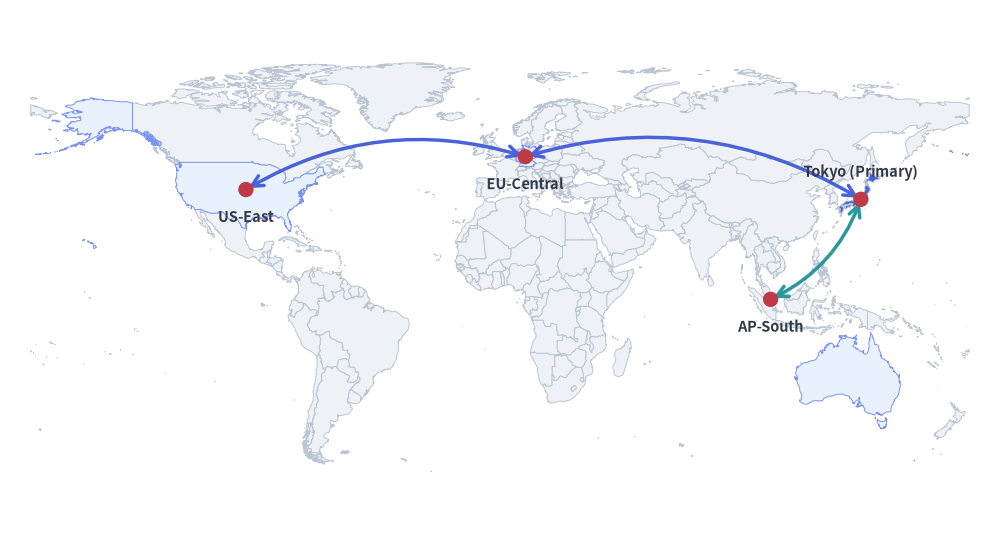
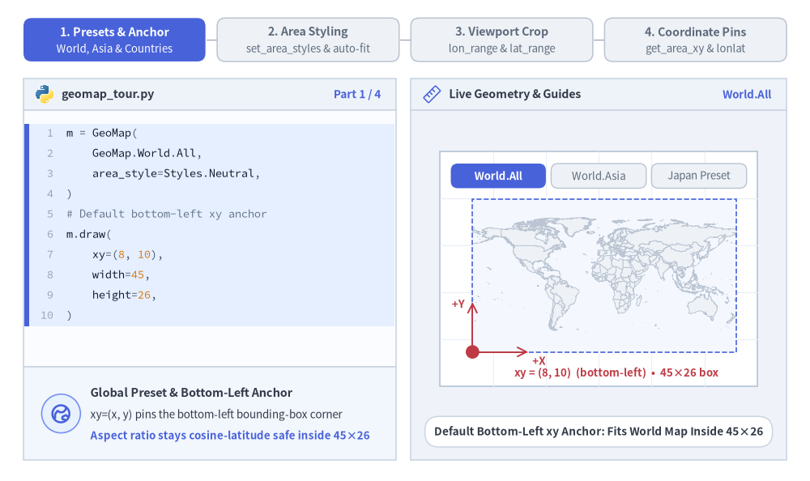
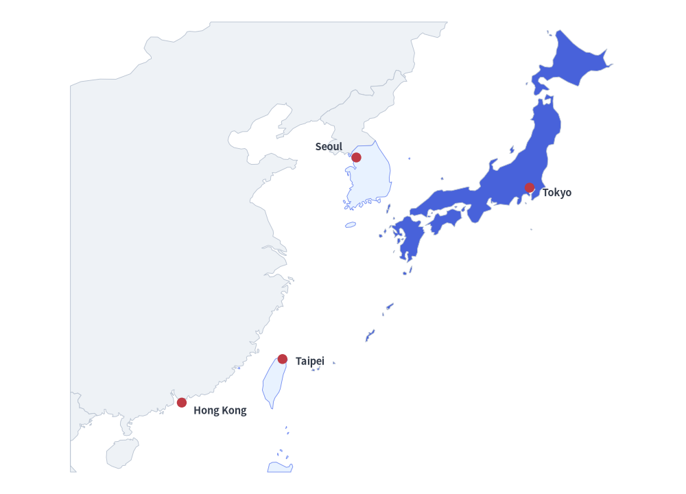
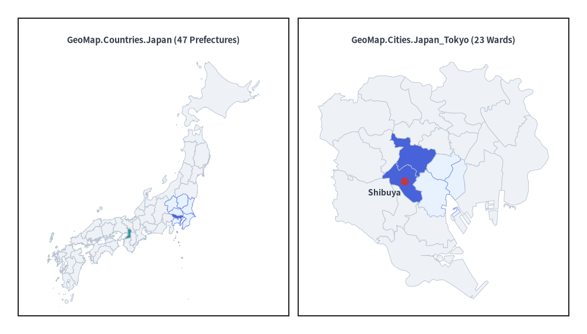
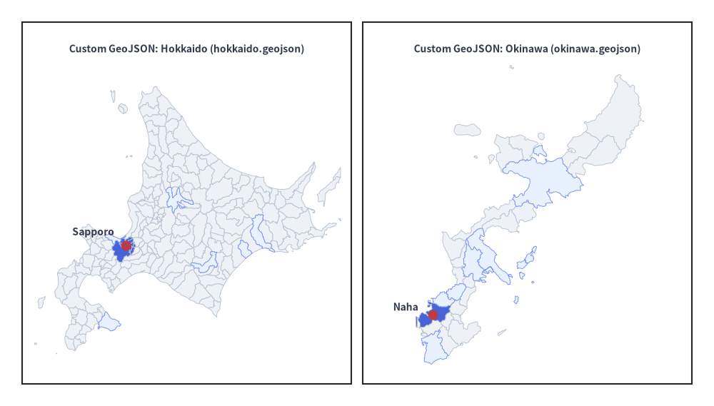

GeoMap Component
The GeoMap component renders vector geographical maps (GeoMap.World.*, GeoMap.Countries.*, GeoMap.Cities.*, or custom GeoJSON files) directly onto the Drawlib canvas without requiring heavy external GIS dependencies.
By combining GeoMap with get_area_xy() and lonlat_to_xy(), you can overlay standard Drawlib shapes, icons, text labels, and curved arrows to build multi-region cloud topology diagrams, regional expansion maps, and territory highlights.

Source Code
from drawlib.canvas import setup
from drawlib.lines import line_curved
from drawlib.shapes import circle
from drawlib.smartarts import GeoMap
from drawlib.styles import Styles
from drawlib.text import text
setup(width=130, height=70)
world = GeoMap(GeoMap.World.All, area_style=Styles.Neutral)
# Use world.get_areas() to inspect all available country/area names
world.set_area_styles(["United States", "Germany", "Singapore", "Australia"], Styles.PrimaryNeutral)
world.set_area_styles(["Japan"], Styles.PrimaryFlat)
world.draw(xy=(4, 4), width=122, height=62)
jp_xy = world.get_area_xy("Japan")
us_xy = world.get_area_xy("United States")
de_xy = world.get_area_xy("Germany")
sg_xy = world.get_area_xy("Singapore")
line_curved(us_xy, de_xy, bend=-0.22, arrow_head="<->", style=Styles.PrimaryBold)
line_curved(de_xy, jp_xy, bend=-0.22, arrow_head="<->", style=Styles.PrimaryBold)
line_curved(jp_xy, sg_xy, bend=-0.20, arrow_head="<->", style=Styles.SecondaryBold)
for label, pt, dy in [
("Tokyo (Primary)", jp_xy, 3.5),
("US-East", us_xy, -3.5),
("EU-Central", de_xy, -3.5),
("AP-South", sg_xy, -3.5),
]:
circle(pt, radius=1.0, style=Styles.DangerFlat)
text((pt[0], pt[1] + dy), label, style=Styles.DarkBold.patch(text_size=10.5))
1. Core Concepts & Basic Usage
GeoMap renders vector world, continental, country, and city presets (GeoMap.World.*, GeoMap.Countries.*, GeoMap.Cities.*) or custom GeoJSON files directly onto the canvas, anchoring by default at the Bottom-Left (x, y) corner of the target box (or its center when align="center"). You can highlight or isolate territories via set_area_styles(), crop viewports with lon_range and lat_range, and query projected canvas coordinates after .draw() using get_area_xy() and lonlat_to_xy():

Source Code
from __future__ import annotations
from drawlib.anim import Animation
from drawlib.canvas import save, setup
from drawlib.icons import code as code_icons
from drawlib.icons import phosphor
from drawlib.lines import line, line_curved
from drawlib.shapes import circle, rectangle
from drawlib.smartarts import GeoMap, SourceCode, SourceCodeStyles
from drawlib.styles import Styles
from drawlib.text import text
W, H = 138.0, 82.0
setup(width=W, height=H)
anim = Animation(fps=10.0, loop=0)
CODE_TEXT_SIZE = 10.0
PT_TO_CANVAS = W / 720.0
FONT_CANVAS = CODE_TEXT_SIZE * PT_TO_CANVAS
LINE_H = FONT_CANVAS * 1.8
PAD_Y = FONT_CANVAS * 1.2
CODE_STYLES = SourceCodeStyles.get("default", font_lang="en", text_size=CODE_TEXT_SIZE).patch(
box_style=Styles.Neutral.patch(shape_fill_color=(0, 0, 0, 0), shape_line_width=0),
)
PANE_HEADER = Styles.Neutral.patch(
shape_fill_color=(238, 243, 250),
shape_line_color=(203, 213, 225),
shape_line_width=1.2,
shape_r=0.0,
)
EDITOR_BODY = Styles.Neutral.patch(
shape_fill_color=(250, 252, 255),
shape_line_color=(203, 213, 225),
shape_line_width=1.2,
shape_r=0.0,
)
TAKEAWAY_BODY = Styles.Neutral.patch(
shape_fill_color=(242, 246, 253),
shape_line_color=(203, 213, 225),
shape_line_width=1.2,
shape_r=0.0,
)
STUDIO_BODY = Styles.Neutral.patch(
shape_fill_color=(239, 243, 249),
shape_line_color=(203, 213, 225),
shape_line_width=1.2,
shape_r=0.0,
)
PART_ITEMS = [
("1. Presets & Anchor", "World, Asia & Countries"),
("2. Area Styling", "set_area_styles & auto-fit"),
("3. Viewport Crop", "lon_range & lat_range"),
("4. Coordinate Pins", "get_area_xy & lonlat"),
]
def draw_step_bar(active_part: int) -> None:
"""Draw top 4-part progress bar (active_part is 1..4)."""
pill_w = 31.0
pill_h = 7.4
gap = 2.0
start_x = 4.0 + pill_w / 2.0
cy = 75.2
for idx, (label, sublabel) in enumerate(PART_ITEMS, start=1):
cx = start_x + (idx - 1) * (pill_w + gap)
if idx > 1:
prev_cx = cx - (pill_w + gap)
line(
(prev_cx + pill_w / 2.0 + 0.2, cy),
(cx - pill_w / 2.0 - 0.2, cy),
style=Styles.PrimaryBold if idx <= active_part else Styles.MutedThin,
)
if idx == active_part:
st = Styles.PrimaryFlat.patch(shape_r=1.4)
tst = Styles.WhiteBold.patch(text_size=10.3)
sub_tst = Styles.White.patch(text_size=9.5)
elif idx < active_part:
st = Styles.PrimaryNeutral.patch(shape_r=1.4, shape_line_width=1.1)
tst = Styles.PrimaryBold.patch(text_size=10.3)
sub_tst = Styles.Primary.patch(text_size=9.5)
else:
st = Styles.Neutral.patch(shape_r=1.4, shape_line_width=1.1)
tst = Styles.MutedBold.patch(text_size=10.3)
sub_tst = Styles.Muted.patch(text_size=9.5)
rectangle((cx, cy), width=pill_w, height=pill_h, style=st)
text((cx, cy + 1.35), label, style=tst)
text((cx, cy - 1.55), sublabel, style=sub_tst)
def draw_left_pane(
active_part: int,
code_lines: list[str],
hl_range: tuple[int, int],
icon_fn: object,
summary_title: str,
summary_line1: str,
summary_line2: str,
) -> None:
"""Draw left Python code editor + bottom concept takeaway card."""
x0, w = 4.0, 63.5
cx = x0 + w / 2.0
top_y = 63.2
header_h = 5.4
editor_h = 43.8
takeaway_h = 15.8
rectangle((cx, top_y + header_h / 2.0), width=w, height=header_h, style=PANE_HEADER)
code_icons.python((x0 + 3.6, top_y + header_h / 2.0), width=3.4, style=Styles.Neutral)
text(
(x0 + 6.5, top_y + header_h / 2.0),
"geomap_tour.py",
style=Styles.DarkBold.patch(text_size=10.2, halign="left"),
)
text(
(x0 + w - 2.6, top_y + header_h / 2.0),
f"Part {active_part} / 4",
style=Styles.PrimaryBold.patch(text_size=9.8, halign="right"),
)
rectangle((cx, top_y - editor_h / 2.0), width=w, height=editor_h, style=EDITOR_BODY)
hl_start, hl_end = hl_range
hl_top = top_y - PAD_Y - hl_start * LINE_H
hl_bot = top_y - PAD_Y - (hl_end + 1) * LINE_H
hl_cy = (hl_top + hl_bot) / 2.0
hl_h = hl_top - hl_bot
rectangle(
(cx, hl_cy),
width=w - 0.6,
height=hl_h,
style=Styles.Neutral.patch(shape_fill_color=(229, 239, 255), shape_line_width=0),
)
rectangle(
(x0 + 0.55, hl_cy),
width=0.9,
height=hl_h,
style=Styles.PrimaryFlat.patch(shape_line_width=0),
)
SourceCode.draw(
xy=(x0, top_y),
width=w,
code="\n".join(code_lines),
styles=CODE_STYLES,
code_lang="python",
show_linenum=True,
align="top_left",
)
take_cy = 3.6 + takeaway_h / 2.0
rectangle((cx, take_cy), width=w, height=takeaway_h, style=TAKEAWAY_BODY)
circle(
(x0 + 6.4, take_cy),
radius=3.3,
style=Styles.PrimaryNeutral.patch(shape_line_width=1.2),
)
icon_fn((x0 + 6.4, take_cy), width=3.8, style=Styles.PrimaryBold) # type: ignore[operator]
text(
(x0 + 11.4, take_cy + 3.6),
summary_title,
style=Styles.DarkBold.patch(text_size=10.4, halign="left"),
)
text(
(x0 + 11.4, take_cy - 0.2),
summary_line1,
style=Styles.Dark.patch(text_size=9.7, halign="left"),
)
text(
(x0 + 11.4, take_cy - 3.8),
summary_line2,
style=Styles.PrimaryBold.patch(text_size=9.6, halign="left"),
)
def draw_geometry_studio(param_badge: str, footer_caption: str) -> tuple[float, float]:
"""Draw right geometry lab shell, inner coordinate sheet with subtle grid, and footer."""
x0, w = 70.0, 64.0
cx = x0 + w / 2.0
top_y = 63.2
header_h = 5.4
body_h = 59.6
rectangle((cx, top_y + header_h / 2.0), width=w, height=header_h, style=PANE_HEADER)
phosphor.ruler((x0 + 3.6, top_y + header_h / 2.0), width=3.4, style=Styles.Primary)
text(
(x0 + 6.5, top_y + header_h / 2.0),
"Live Geometry & Guides",
style=Styles.DarkBold.patch(text_size=10.2, halign="left"),
)
text(
(x0 + w - 2.6, top_y + header_h / 2.0),
param_badge,
style=Styles.PrimaryBold.patch(text_size=9.6, halign="right"),
)
rectangle((cx, 3.6 + body_h / 2.0), width=w, height=body_h, style=STUDIO_BODY)
sheet_cx, sheet_cy = cx, 36.2
sheet_w, sheet_h = 54.0, 40.0
sx0, sy0 = sheet_cx - sheet_w / 2.0, sheet_cy - sheet_h / 2.0
rectangle(
(sheet_cx, sheet_cy),
width=sheet_w,
height=sheet_h,
style=Styles.Neutral.patch(
shape_fill_color=(255, 255, 255),
shape_line_color=(180, 194, 214),
shape_line_width=1.2,
),
)
g_st = Styles.MutedThin.patch(line_color=(232, 238, 246), line_width=0.8)
for gx in range(1, 6):
vx = sx0 + gx * (sheet_w / 6.0)
line((vx, sy0), (vx, sy0 + sheet_h), style=g_st)
for gy in range(1, 5):
vy = sy0 + gy * (sheet_h / 5.0)
line((sx0, vy), (sx0 + sheet_w, vy), style=g_st)
rectangle(
(cx, 8.4),
width=59.2,
height=5.2,
style=Styles.Neutral.patch(
shape_fill_color=(255, 255, 255),
shape_line_color=(203, 213, 225),
shape_line_width=1.1,
shape_r=2.4,
),
text=footer_caption,
text_style=Styles.DarkBold.patch(text_size=9.8),
)
return sheet_cx, sheet_cy
def draw_sub_pills(scx: float, labels: list[str], active_idx: int) -> None:
"""Draw 3-step tracker pills near the top of the studio sheet."""
pw, ph, pgap = 16.2, 4.2, 0.9
p_start = scx - (3 * pw + 2 * pgap) / 2.0 + pw / 2.0
for idx, lbl in enumerate(labels):
px = p_start + idx * (pw + pgap)
if idx == active_idx:
pst = Styles.PrimaryFlat.patch(shape_r=1.2)
ptst = Styles.WhiteBold.patch(text_size=9.5)
elif idx < active_idx:
pst = Styles.PrimaryNeutral.patch(shape_r=1.2, shape_line_width=1.0)
ptst = Styles.PrimaryBold.patch(text_size=9.5)
else:
pst = Styles.Neutral.patch(shape_r=1.2, shape_line_width=1.0)
ptst = Styles.Muted.patch(text_size=9.5)
rectangle((px, 52.0), width=pw, height=ph, style=pst, text=lbl, text_style=ptst)
OCEAN_BG = Styles.Neutral.patch(
shape_fill_color=(244, 248, 254),
shape_line_width=0,
shape_r=0.0,
)
# =========================================================================
# Part 1: Presets & Anchor — World.All, World.Asia & Countries.Japan
# =========================================================================
PRESET_STATES = [
(
GeoMap.World.All,
3.3,
[
"m = GeoMap(",
" GeoMap.World.All,",
" area_style=Styles.Neutral,",
")",
"# Default bottom-left xy anchor",
"m.draw(",
" xy=(8, 10),",
" width=45,",
" height=26,",
")",
],
(0, 9),
"World.All",
"Default Bottom-Left xy Anchor: Fits World Map Inside 45×26",
"Global Preset & Bottom-Left Anchor",
"xy=(x, y) pins the bottom-left bounding-box corner",
"Aspect ratio stays cosine-latitude safe inside 45×26",
),
(
GeoMap.World.Asia,
3.3,
[
"# 11 regional World.* presets",
"m = GeoMap(",
" GeoMap.World.Asia,",
" area_style=Styles.Neutral,",
")",
"m.draw(",
" xy=(8, 10),",
" width=45,",
" height=26,",
")",
],
(1, 4),
"World.Asia",
"GeoMap.World.Asia: Built-In Continental Preset Inside 45×26",
"11 Regional World.* Presets",
"Switch between Asia, Europe, APAC, NorthAmerica, etc.",
"Centers regional geometry cleanly inside target box",
),
(
GeoMap.Countries.Japan,
3.4,
[
"# 215 Admin-1 country presets",
"m = GeoMap(",
" GeoMap.Countries.Japan,",
" area_style=Styles.Neutral,",
")",
"m.draw(",
" xy=(8, 10),",
" width=45,",
" height=26,",
")",
],
(1, 4),
"Countries.Japan",
"GeoMap.Countries.Japan: 47 Prefectures in 45×26 Box",
"Country & City Presets (215 + 16)",
"Admin-1 states/prefectures via GeoMap.Countries.*",
"Plus 16 metro ward maps via GeoMap.Cities.*",
),
]
for p_idx, (target_preset, dur, code_p, hl_rng, badge_txt, foot_txt, s_t, s_1, s_2) in enumerate(PRESET_STATES):
with anim.frame(duration=dur):
draw_step_bar(1)
draw_left_pane(1, code_p, hl_rng, phosphor.globe_hemisphere_east, s_t, s_1, s_2)
scx, scy = draw_geometry_studio(badge_txt, foot_txt)
draw_sub_pills(scx, ["World.All", "World.Asia", "Japan Preset"], p_idx)
mx0, my0, mw, mh = 80.5, 22.0, 45.0, 26.0
gm = GeoMap(target_preset, area_style=Styles.Neutral, background_style=OCEAN_BG)
gm.draw(xy=(mx0, my0), width=mw, height=mh)
rectangle(
(mx0 + mw / 2.0, my0 + mh / 2.0),
width=mw,
height=mh,
style=Styles.PrimaryDashed.patch(shape_fill_color=(0, 0, 0, 0), shape_line_width=1.2),
)
# Bottom-Left xy anchor + +X / +Y Cartesian axes
line(
(mx0, my0),
(mx0, my0 + 8.5),
arrow_head="->",
style=Styles.DangerBold.patch(line_width=1.4),
)
text(
(mx0 - 1.3, my0 + 8.2),
"+Y",
style=Styles.DangerBold.patch(text_size=9.5, halign="right"),
)
line(
(mx0, my0),
(mx0 + 9.5, my0),
arrow_head="->",
style=Styles.DangerBold.patch(line_width=1.4),
)
text(
(mx0 + 10.2, my0 - 1.5),
"+X",
style=Styles.DangerBold.patch(text_size=9.5, halign="left"),
)
circle((mx0, my0), radius=1.15, style=Styles.DangerFlat)
text(
(scx + 3.0, 18.4),
"xy = (8, 10) (bottom-left) • 45×26 box",
style=Styles.DangerBold.patch(text_size=9.5),
)
# =========================================================================
# Part 2: Area Styling — set_area_styles() & Styles.Transparent Auto-Fit
# =========================================================================
STYLE_STATES = [
(
"neutral_tints",
3.3,
[
"world = GeoMap(",
" GeoMap.World.All,",
" area_style=Styles.Neutral,",
")",
"world.set_area_styles(",
' ["United States", "Germany"],',
" Styles.PrimaryNeutral,",
")",
"world.draw((8, 10), 45, 26)",
],
(4, 7),
"PrimaryNeutral",
"set_area_styles(): Calm PrimaryNeutral Secondary Regions",
"Selective Territory Tinting",
"Accepts English names, ISO codes, or JP aliases",
"Ground secondary regions in PrimaryNeutral",
),
(
"focal_japan",
3.3,
[
"world = GeoMap(",
" GeoMap.World.All,",
" area_style=Styles.Neutral,",
")",
"world.set_area_styles(",
' ["United States", "Germany"],',
" Styles.PrimaryNeutral,",
")",
"world.set_area_styles(",
' ["Japan"], Styles.PrimaryFlat)',
"world.draw((8, 10), 45, 26)",
],
(8, 9),
"PrimaryFlat Focal",
"Reserve Styles.PrimaryFlat for 1 Focal Territory (Japan)",
"50%+ Neutral Visual Hierarchy",
"Neutral world base + 1 saturated PrimaryFlat hero",
"Preserves crisp borders between adjacent regions",
),
(
"transparent_fit",
3.5,
[
"asia = GeoMap(",
" GeoMap.World.Asia,",
" area_style=Styles.Transparent,",
")",
"asia.set_area_styles(",
' ["China", "South Korea"],',
" Styles.PrimaryNeutral,",
")",
"asia.set_area_styles(",
' ["Japan"], Styles.PrimaryFlat)',
"asia.draw((8, 10), 45, 26)",
],
(0, 9),
"Transparent Fit",
"Styles.Transparent Hides Rest & Auto-Fits Visible Bounds",
"Selective Visibility & Auto-Fit",
"area_style=Styles.Transparent hides all other areas",
"draw() auto-zooms to fit only styled countries!",
),
]
for st_idx, (st_mode, dur, code_st, hl_rng, badge_txt, foot_txt, s_t, s_1, s_2) in enumerate(STYLE_STATES):
with anim.frame(duration=dur):
draw_step_bar(2)
draw_left_pane(2, code_st, hl_rng, phosphor.palette, s_t, s_1, s_2)
scx, scy = draw_geometry_studio(badge_txt, foot_txt)
draw_sub_pills(scx, ["Neutral Tints", "+ Focal Area", "Auto-Fit Crop"], st_idx)
mx0, my0, mw, mh = 79.5, 22.0, 45.0, 26.0
if st_mode in ("neutral_tints", "focal_japan"):
gm = GeoMap(GeoMap.World.All, area_style=Styles.Neutral, background_style=OCEAN_BG)
gm.set_area_styles(["United States", "Germany"], Styles.PrimaryNeutral)
if st_mode == "focal_japan":
gm.set_area_styles(["Japan"], Styles.PrimaryFlat)
gm.draw(xy=(mx0, my0), width=mw, height=mh)
rectangle(
(mx0 + mw / 2.0, my0 + mh / 2.0),
width=mw,
height=mh,
style=Styles.MutedThin.patch(shape_fill_color=(0, 0, 0, 0), shape_line_width=1.0),
)
if st_mode == "neutral_tints":
text(
(scx, 18.4),
"United States & Germany -> Styles.PrimaryNeutral",
style=Styles.PrimaryBold.patch(text_size=9.5),
)
else:
jp_pt = gm.get_area_xy("Japan")
circle(
jp_pt,
radius=1.7,
style=Styles.Neutral.patch(
shape_fill_color=(0, 0, 0, 0),
shape_line_color=(220, 38, 38),
shape_line_width=1.6,
),
)
text(
(scx, 18.4),
"1 focal hero: Japan -> Styles.PrimaryFlat",
style=Styles.PrimaryBold.patch(text_size=9.5),
)
else:
gm = GeoMap(GeoMap.World.Asia, area_style=Styles.Transparent, background_style=OCEAN_BG)
gm.set_area_styles(["China", "South Korea"], Styles.PrimaryNeutral)
gm.set_area_styles(["Japan"], Styles.PrimaryFlat)
gm.draw(xy=(mx0, my0), width=mw, height=mh)
rectangle(
(mx0 + mw / 2.0, my0 + mh / 2.0),
width=mw,
height=mh,
style=Styles.PrimaryDashed.patch(shape_fill_color=(0, 0, 0, 0), shape_line_width=1.2),
)
text(
(scx, 18.4),
"Auto-zoomed to China, South Korea & Japan!",
style=Styles.PrimaryBold.patch(text_size=9.5),
)
# =========================================================================
# Part 3: Viewport Crop — lon_range, lat_range & align="center"
# =========================================================================
CROP_STATES = [
(
(106.0, 146.0),
(18.0, 46.0),
"bottom_left",
3.3,
[
"asia = GeoMap(",
" GeoMap.World.Asia,",
" area_style=Styles.Neutral,",
")",
"asia.set_area_styles(",
' ["Japan"], Styles.PrimaryFlat)',
"asia.draw(",
" xy=(8, 10), width=45,",
" height=26,",
" lon_range=(106, 146),",
" lat_range=(18, 46))",
],
(9, 10),
"lon 106..146",
"Crop Asia: lon_range=(106, 146), lat_range=(18, 46)",
"Explicit Bounding-Box Crop",
"Clips polygons cleanly at (min_lon, max_lon) bounds",
"East Asia view spanning 106°E–146°E, 18°N–46°N",
),
(
(124.0, 146.0),
(28.0, 46.0),
"bottom_left",
3.3,
[
"asia = GeoMap(",
" GeoMap.World.Asia,",
" area_style=Styles.Neutral,",
")",
"asia.set_area_styles(",
' ["Japan"], Styles.PrimaryFlat)',
"asia.draw(",
" xy=(8, 10), width=45,",
" height=26,",
" lon_range=(124, 146),",
" lat_range=(28, 46))",
],
(9, 10),
"lon 124..146",
"Zoom Closer: lon_range=(124, 146), lat_range=(28, 46)",
"Continuous Regional Zoom",
"Narrower degree bounds magnify Korea & Japan",
"Same 45×26 canvas box with zero distortion",
),
(
(124.0, 146.0),
(28.0, 46.0),
"center",
3.4,
[
"asia = GeoMap(",
" GeoMap.World.Asia,",
" area_style=Styles.Neutral,",
")",
"asia.set_area_styles(",
' ["Japan"], Styles.PrimaryFlat)',
"asia.draw(",
" xy=(30, 23), width=45,",
' height=26, align="center",',
" lon_range=(124, 146),",
" lat_range=(28, 46))",
],
(7, 8),
'align="center"',
'align="center": Centers 45×26 Map Box on xy=(cx, cy)',
'Centered Map Anchor (align="center")',
"Centers map bounding box horizontally & vertically",
"Ideal for symmetric panels and centered cards",
),
]
for c_idx, (lon_r, lat_r, aln, dur, code_c, hl_rng, badge_txt, foot_txt, s_t, s_1, s_2) in enumerate(CROP_STATES):
with anim.frame(duration=dur):
draw_step_bar(3)
draw_left_pane(3, code_c, hl_rng, phosphor.crop, s_t, s_1, s_2)
scx, scy = draw_geometry_studio(badge_txt, foot_txt)
draw_sub_pills(scx, ["East Asia", "Zoom Closer", 'align="center"'], c_idx)
mw, mh = 45.0, 26.0
asia = GeoMap(GeoMap.World.Asia, area_style=Styles.Neutral, background_style=OCEAN_BG)
asia.set_area_styles(["Japan"], Styles.PrimaryFlat)
if aln == "bottom_left":
mx0, my0 = 79.5, 22.0
asia.draw(xy=(mx0, my0), width=mw, height=mh, lon_range=lon_r, lat_range=lat_r)
rectangle(
(mx0 + mw / 2.0, my0 + mh / 2.0),
width=mw,
height=mh,
style=Styles.PrimaryDashed.patch(shape_fill_color=(0, 0, 0, 0), shape_line_width=1.2),
)
circle((mx0, my0), radius=1.1, style=Styles.DangerFlat)
text(
(scx, 18.4),
f"lon=({int(lon_r[0])}°E, {int(lon_r[1])}°E) • lat=({int(lat_r[0])}°N, {int(lat_r[1])}°N)",
style=Styles.PrimaryBold.patch(text_size=9.5),
)
else:
cx_m, cy_m = scx, 35.0
asia.draw(xy=(cx_m, cy_m), width=mw, height=mh, align="center", lon_range=lon_r, lat_range=lat_r)
rectangle(
(cx_m, cy_m),
width=mw,
height=mh,
style=Styles.PrimaryDashed.patch(shape_fill_color=(0, 0, 0, 0), shape_line_width=1.3),
)
line((cx_m - 24.5, cy_m), (cx_m - 22.5, cy_m), style=Styles.DangerBold.patch(line_width=1.5))
line((cx_m + 22.5, cy_m), (cx_m + 24.5, cy_m), style=Styles.DangerBold.patch(line_width=1.5))
line((cx_m, cy_m + 13.0), (cx_m, cy_m + 14.5), style=Styles.DangerBold.patch(line_width=1.5))
line((cx_m, cy_m - 14.5), (cx_m, cy_m - 13.0), style=Styles.DangerBold.patch(line_width=1.5))
circle(
(cx_m, cy_m),
radius=1.6,
style=Styles.Neutral.patch(shape_fill_color=(255, 255, 255), shape_line_width=0),
)
circle((cx_m, cy_m), radius=1.15, style=Styles.DangerFlat)
text(
(scx, 18.4),
'xy = (30, 23) • align="center"',
style=Styles.DangerBold.patch(text_size=9.5),
)
# =========================================================================
# Part 4: Coordinate Pins — get_area_xy() & lonlat_to_xy() After .draw()
# =========================================================================
PIN_STATES = [
(
"area_xy",
3.3,
[
"w = GeoMap(GeoMap.World.All)",
"w.set_area_styles(",
' ["United States"],',
" Styles.PrimaryNeutral)",
"w.set_area_styles(",
' ["Japan"], Styles.PrimaryFlat)',
"w.draw((8, 10), 45, 26)",
"# Query centers AFTER .draw()",
'jp = w.get_area_xy("Japan")',
"us = w.get_area_xy(",
' "United States")',
],
(7, 10),
"get_area_xy()",
"Query Area Centers After .draw() via get_area_xy()",
"Named Area Coordinate Lookup",
"Call get_area_xy() after .draw() projects polygons",
"Returns interior center (x, y) on the canvas",
),
(
"curved_arc",
3.4,
[
"w = GeoMap(GeoMap.World.All)",
"w.set_area_styles(..., ...)",
"w.draw((8, 10), 45, 26)",
'jp = w.get_area_xy("Japan")',
"us = w.get_area_xy(",
' "United States")',
"line_curved(",
" us, jp,",
" bend=-0.22,",
' arrow_head="<->",',
" style=Styles.PrimaryBold)",
],
(6, 10),
"line_curved()",
'Connect Regions with line_curved(us, jp, arrow_head="<->")',
"Overlaying Drawlib Connectors",
"Pass projected (x, y) tuples to any line or shape",
"Builds multi-region cloud & network topologies",
),
(
"lonlat_pin",
3.5,
[
"asia = GeoMap(GeoMap.World.Asia)",
"asia.set_area_styles(",
' ["Japan"], Styles.PrimaryFlat)',
"asia.draw(",
" (8, 10), 45, 26,",
" lon_range=(106, 146),",
" lat_range=(18, 46))",
"# Project (lon, lat) -> (x, y)",
"px, py = asia.lonlat_to_xy(",
" 139.69, 35.69)",
"circle((px, py), 1.0, style=...)",
],
(7, 10),
"lonlat_to_xy()",
"lonlat_to_xy(139.69, 35.69): Exact GPS City Pin Markers",
"Exact (lon, lat) Pin Projection",
"Projects decimal (longitude, latitude) into (x, y)",
"Pinpoints cities, PoPs, and data center sites",
),
]
for pin_idx, (p_mode, dur, code_pin, hl_rng, badge_txt, foot_txt, s_t, s_1, s_2) in enumerate(PIN_STATES):
with anim.frame(duration=dur):
draw_step_bar(4)
draw_left_pane(4, code_pin, hl_rng, phosphor.map_pin, s_t, s_1, s_2)
scx, scy = draw_geometry_studio(badge_txt, foot_txt)
draw_sub_pills(scx, ["get_area_xy()", "line_curved()", "lonlat_to_xy()"], pin_idx)
mx0, my0, mw, mh = 79.5, 22.0, 45.0, 26.0
if p_mode in ("area_xy", "curved_arc"):
w_map = GeoMap(GeoMap.World.All, area_style=Styles.Neutral, background_style=OCEAN_BG)
w_map.set_area_styles(["United States"], Styles.PrimaryNeutral)
w_map.set_area_styles(["Japan"], Styles.PrimaryFlat)
w_map.draw(xy=(mx0, my0), width=mw, height=mh)
rectangle(
(mx0 + mw / 2.0, my0 + mh / 2.0),
width=mw,
height=mh,
style=Styles.MutedThin.patch(shape_fill_color=(0, 0, 0, 0), shape_line_width=1.0),
)
jp_xy = w_map.get_area_xy("Japan")
us_xy = w_map.get_area_xy("United States")
if p_mode == "curved_arc":
line_curved(us_xy, jp_xy, bend=-0.22, arrow_head="<->", style=Styles.PrimaryBold)
circle(us_xy, radius=1.05, style=Styles.DangerFlat)
circle(jp_xy, radius=1.05, style=Styles.DangerFlat)
text((us_xy[0], us_xy[1] - 2.6), "US", style=Styles.DarkBold.patch(text_size=9.5))
text((jp_xy[0] - 1.2, jp_xy[1] - 2.6), "Japan", style=Styles.DarkBold.patch(text_size=9.5))
text(
(scx, 18.4),
'get_area_xy("United States") & get_area_xy("Japan")'
if p_mode == "area_xy"
else 'line_curved(us, jp, bend=-0.22, arrow_head="<->")',
style=Styles.PrimaryBold.patch(text_size=9.5),
)
else:
asia = GeoMap(GeoMap.World.Asia, area_style=Styles.Neutral, background_style=OCEAN_BG)
asia.set_area_styles(["South Korea", "Taiwan"], Styles.PrimaryNeutral)
asia.set_area_styles(["Japan"], Styles.PrimaryFlat)
asia.draw(xy=(mx0, my0), width=mw, height=mh, lon_range=(106.0, 146.0), lat_range=(18.0, 46.0))
rectangle(
(mx0 + mw / 2.0, my0 + mh / 2.0),
width=mw,
height=mh,
style=Styles.MutedThin.patch(shape_fill_color=(0, 0, 0, 0), shape_line_width=1.0),
)
for city_lbl, lon, lat, dx, dy in [
("Tokyo", 139.69, 35.69, 1.4, -2.6),
("Seoul", 126.98, 37.57, -4.2, 2.0),
("Taipei", 121.56, 25.03, 4.4, -0.6),
]:
px, py = asia.lonlat_to_xy(lon, lat)
circle((px, py), radius=0.95, style=Styles.DangerFlat)
text((px + dx, py + dy), city_lbl, style=Styles.DarkBold.patch(text_size=9.5))
text(
(scx, 18.4),
"Tokyo = lonlat_to_xy(139.69, 35.69)",
style=Styles.PrimaryBold.patch(text_size=9.5),
)
save()
- Presets & Anchor (
xy,align): PassGeoMap.World.*,GeoMap.Countries.*,GeoMap.Cities.*, or a.geojsonpath and render insidewidth × heightanchored at Bottom-Leftxyby default (or centered viaalign="center"). - Area Styling & Auto-Fit (
set_area_styles,Styles.Transparent): Highlight specific territories by English name, ISO code, or Japanese alias, or passarea_style=Styles.Transparentso.draw()hides unstyled areas and auto-fits visible bounds. - Viewport Cropping (
lon_range,lat_range): Pass(min_lon, max_lon)and(min_lat, max_lat)to crop and zoom into any sub-region while preserving cosine-corrected geographical aspect ratio. - Post-Draw Coordinate Lookup (
get_area_xy,lonlat_to_xy): Callget_area_xy(area)orlonlat_to_xy(lon, lat)after.draw()to attach curved connectors, pins, icons, and callout labels at exact projected coordinates.
2. Global Multi-Region Topology (GeoMap.World.All)
As shown in the global topology map above, pass GeoMap.World.All to GeoMap to render a complete world map. You can inspect all available area names via get_areas(), highlight specific areas with set_area_styles() (by English name, ISO code such as "JP" / "USA", or Japanese name such as "日本"), and use get_area_xy() to anchor connectors and labels:
world = GeoMap(GeoMap.World.All, area_style=Styles.Neutral)
world.set_area_styles(["United States", "Germany", "Singapore", "Australia"], Styles.PrimaryNeutral)
world.set_area_styles(["Japan"], Styles.PrimaryFlat)
world.draw(xy=(4, 4), width=122, height=62)
jp_xy = world.get_area_xy("Japan")
3. Regional World Presets & Cropping (GeoMap.World.Asia, EastAsia, Europe)
GeoMap.World provides 11 continental and regional presets (All, Asia, Europe, NorthAmerica, SouthAmerica, Africa, Oceania, EastAsia, SoutheastAsia, APAC, MiddleEast).
You can also initialize any map with area_style=Styles.Transparent so unstyled areas are hidden, style only the target countries via set_area_styles(), and refine the viewport with lon_range and lat_range.
from drawlib.canvas import setup
from drawlib.shapes import circle
from drawlib.smartarts import GeoMap
from drawlib.styles import Styles
from drawlib.text import text
setup(width=125, height=90)
# Hide all unstyled areas with Styles.Transparent
asia = GeoMap(GeoMap.World.Asia, area_style=Styles.Transparent)
# Style only the areas to display (inspect available names with asia.get_areas())
asia.set_area_styles(["China", "North Korea", "Vietnam"], Styles.Neutral)
asia.set_area_styles(["South Korea", "Taiwan", "Philippines"], Styles.PrimaryNeutral)
asia.set_area_styles(["Japan", "Hong Kong"], Styles.PrimaryFlat)
# Crop to East Asia (from Hong Kong to Japan)
asia.draw(
xy=(5, 4),
width=115,
height=82,
lon_range=(106, 146),
lat_range=(18, 46),
)
# Place city pins using exact (longitude, latitude) coordinates
for label, lon, lat, dx, dy in [
("Tokyo", 139.69, 35.69, 5.0, -1.0),
("Seoul", 126.98, 37.57, -5.0, 2.0),
("Taipei", 121.56, 25.03, 5.0, -0.5),
("Hong Kong", 114.17, 22.32, 7.0, -1.5),
]:
px, py = asia.lonlat_to_xy(lon, lat)
circle((px, py), radius=0.9, style=Styles.DangerFlat)
text((px + dx, py + dy), label, style=Styles.DarkBold.patch(text_size=10.5))

4. Country & City Presets (GeoMap.Countries.* & GeoMap.Cities.*)
Use GeoMap.Countries.<Country> for Admin-1 state/province/prefecture maps across 215 countries (such as GeoMap.Countries.Japan, GeoMap.Countries.UnitedStates, GeoMap.Countries.Germany) and GeoMap.Cities.<Country>_<City> for flagship metropolitan ward/district maps (such as GeoMap.Cities.Japan_Tokyo, GeoMap.Cities.UnitedStates_NewYork).
When area_style=Styles.Transparent is used and only a subset of areas is styled via set_area_styles() (such as Tokyo's 23 wards excluding Tama and the islands), GeoMap.draw() automatically zooms and fits the viewport to the visible areas even without specifying lon_range / lat_range.
from drawlib.canvas import setup
from drawlib.shapes import circle, rectangle
from drawlib.smartarts import GeoMap
from drawlib.styles import Styles
from drawlib.text import text
setup(width=130, height=74)
# Left Panel: Japan (highlight Kanto prefectures, Tokyo, and Osaka)
rectangle((34, 37), width=60, height=66, style=Styles.White)
text((34, 65), "GeoMap.Countries.Japan (47 Prefectures)", style=Styles.DarkBold.patch(text_size=10.5))
jp = GeoMap(GeoMap.Countries.Japan, area_style=Styles.Neutral)
# jp.get_areas() -> ['Hokkaido', 'Aomori', ..., 'Tokyo', ..., 'Okinawa']
jp.set_area_styles(
["Ibaraki", "Tochigi", "Gunma", "Saitama", "Chiba", "Kanagawa"],
Styles.PrimaryNeutral,
)
jp.set_area_styles(["Tokyo"], Styles.PrimaryFlat)
jp.set_area_styles(["Osaka"], Styles.SecondaryFlat)
jp.draw(xy=(6, 6), width=56, height=56, lon_range=(129, 146), lat_range=(30, 46))
# Right Panel: Tokyo 23 Wards (hide Tama & islands via Styles.Transparent)
rectangle((96, 37), width=60, height=66, style=Styles.White)
text((96, 65), "GeoMap.Cities.Japan_Tokyo (23 Wards)", style=Styles.DarkBold.patch(text_size=10.5))
tokyo = GeoMap(GeoMap.Cities.Japan_Tokyo, area_style=Styles.Transparent)
# tokyo.get_areas() -> ['Chiyoda', 'Chuo', 'Minato', ..., 'Hachioji', ...]
wards_23 = [
"Chiyoda", "Chuo", "Minato", "Shinjuku", "Bunkyo", "Taito",
"Sumida", "Koto", "Shinagawa", "Meguro", "Ota", "Setagaya",
"Shibuya", "Nakano", "Suginami", "Toshima", "Kita", "Arakawa",
"Itabashi", "Nerima", "Adachi", "Katsushika", "Edogawa",
]
tokyo.set_area_styles(wards_23, Styles.Neutral)
tokyo.set_area_styles(["Chiyoda", "Chuo", "Minato"], Styles.PrimaryNeutral)
tokyo.set_area_styles(["Shinjuku", "Shibuya"], Styles.PrimaryFlat)
tokyo.draw(xy=(68, 6), width=56, height=56)
shibuya_xy = tokyo.get_area_xy("Shibuya")
circle(shibuya_xy, radius=0.9, style=Styles.DangerFlat)
text((shibuya_xy[0] - 4.5, shibuya_xy[1] - 2.5), "Shibuya", style=Styles.DarkBold.patch(text_size=10.0))

5. Custom GeoJSON Files (_assets/geodata/*.geojson)
In addition to built-in presets, you can pass any .geojson file path (or parsed GeoJSON dictionary) to GeoMap. The example below loads custom municipal GeoJSON files from _assets/geodata/hokkaido.geojson and _assets/geodata/okinawa.geojson.
from drawlib.canvas import setup
from drawlib.shapes import circle, rectangle
from drawlib.smartarts import GeoMap
from drawlib.styles import Styles
from drawlib.text import text
setup(width=130, height=74)
# Left Panel: Hokkaido Municipalities (_assets/geodata/hokkaido.geojson)
rectangle((34, 37), width=60, height=66, style=Styles.White)
text((34, 65), "Custom GeoJSON: Hokkaido (hokkaido.geojson)", style=Styles.DarkBold.patch(text_size=10.0))
hokkaido = GeoMap("_assets/geodata/hokkaido.geojson", area_style=Styles.Neutral)
sapporo_wards = [a for a in hokkaido.get_areas() if a in {
"Chuo", "Kita", "Higashi", "Shiroishi", "Toyohira",
"Minami", "Nishi", "Atsubetsu", "Teine", "Kiyota",
}]
hokkaido.set_area_styles(["Asahikawa", "Hakodate", "Obihiro", "Kushiro", "Otaru"], Styles.PrimaryNeutral)
hokkaido.set_area_styles(sapporo_wards, Styles.PrimaryFlat)
hokkaido.draw(xy=(6, 6), width=56, height=56, lon_range=(139.3, 145.9), lat_range=(41.3, 45.6))
sp_xy = hokkaido.get_area_xy("Chuo")
circle(sp_xy, radius=0.9, style=Styles.DangerFlat)
text((sp_xy[0] - 6.0, sp_xy[1] + 2.5), "Sapporo", style=Styles.DarkBold.patch(text_size=10.0))
# Right Panel: Okinawa Main Island (_assets/geodata/okinawa.geojson)
rectangle((96, 37), width=60, height=66, style=Styles.White)
text((96, 65), "Custom GeoJSON: Okinawa (okinawa.geojson)", style=Styles.DarkBold.patch(text_size=10.0))
okinawa = GeoMap("_assets/geodata/okinawa.geojson", area_style=Styles.Neutral)
okinawa.set_area_styles(["Nago", "Uruma", "Okinawa", "Urasoe", "Ginowan", "Itoman"], Styles.PrimaryNeutral)
okinawa.set_area_styles(["Naha"], Styles.PrimaryFlat)
okinawa.draw(xy=(68, 6), width=56, height=56, lon_range=(127.6, 128.35), lat_range=(26.05, 26.9))
naha_xy = okinawa.get_area_xy("Naha")
circle(naha_xy, radius=0.9, style=Styles.DangerFlat)
text((naha_xy[0] - 5.0, naha_xy[1] + 1.5), "Naha", style=Styles.DarkBold.patch(text_size=10.0))

6. Preset Targets & Area Discovery
Built-in Presets
from drawlib.smartarts import GeoMap
| Category | Preset Targets | Description |
|---|---|---|
GeoMap.World |
All, Asia, Europe, NorthAmerica, SouthAmerica, Africa, Oceania, EastAsia, SoutheastAsia, APAC, MiddleEast |
Global & regional country maps |
GeoMap.Countries |
All 215 countries & territories (Japan, UnitedStates, UnitedKingdom, Germany, France, China, India, Australia, Brazil, Canada, ...) |
Admin-1 states, provinces, or prefectures |
GeoMap.Cities |
Australia_Sydney, China_HongKong, China_Shanghai, France_Paris, Germany_Berlin, Italy_Rome, Japan_Kyoto, Japan_Osaka, Japan_Tokyo, Singapore_Singapore, SouthKorea_Seoul, Taiwan_Taipei, UnitedKingdom_London, UnitedStates_LosAngeles, UnitedStates_NewYork, UnitedStates_SanFrancisco |
16 flagship metropolitan ward/district maps |
| Custom GeoJSON | "_assets/geodata/okinawa.geojson" (path or dict) |
Any standard GeoJSON FeatureCollection |
Inspecting Available Area Names (get_areas())
You can inspect all canonical area names in any map programmatically:
m = GeoMap(GeoMap.Countries.Japan)
print(m.get_areas()) # ['Hokkaido', 'Aomori', ..., 'Tokyo', ..., 'Okinawa']
Alias Resolution: Methods accepting area names (
set_area_styles(),get_area_xy()) are case-insensitive and also accept ISO codes ("JP","JPN","US") as well as Japanese names ("日本","東京都","東京","渋谷区","渋谷").
7. API Reference
Constructor
GeoMap(
target: World | type[World] | Countries | Cities | str | Path | dict[str, Any],
*,
area_style: Style | None = None,
background_style: Style | None = None,
id_key: str | None = None,
name_key: str | None = None,
)
target: Preset (GeoMap.World.All,GeoMap.World.Asia,GeoMap.Countries.Japan,GeoMap.Cities.Japan_Tokyo), path to a.geojsonfile, or a parsed GeoJSONdict.area_style: DefaultStyleapplied to all areas (defaults toStyles.Neutral). PassStyles.Transparentto hide unstyled areas.background_style: OptionalStylefor the map bounding box background (defaults toNonefor transparent background).id_key: Optional GeoJSON featurepropertieskey to use as the canonical area identifier when loading custom GeoJSON files or dicts.name_key: Optional GeoJSON featurepropertieskey to use as the area display name when loading custom GeoJSON files or dicts.
Methods & Properties
geomap.data -> GeoData: Returns the underlying normalizedGeoDatamodel containing the parsed map elements (elements), dataset name (name), and default viewport bounds (default_lon_range,default_lat_range).get_areas() -> list[str]: Return the ordered list of canonical area names in this map.set_area_styles(areas: list[str], style: Style) -> Self: Assign aStyleto the specified list of areas (passStyles.Transparentto hide specific areas).draw(xy=(0.0, 0.0), width=None, height=None, *, lon_range=None, lat_range=None, scale=1.0) -> Self:- Bottom-Left Anchor
xy: Bottom-left(x, y)coordinate of the map box on the canvas. - Aspect-Ratio Safe Sizing (
width,height): Providewidth,height, or both. The map preserves its natural geographical aspect ratio (with cosine-latitude correction) and centers itself within the box when bothwidthandheightare specified. - Viewport Cropping (
lon_range,lat_range): Optional(min_lon, max_lon)and(min_lat, max_lat)tuples to crop and zoom into a specific region. When omitted,draw()automatically fits the viewport to all visible (non-transparent) areas.
- Bottom-Left Anchor
get_area_xy(area: str) -> tuple[float, float]: Returns the canvas(x, y)coordinate of the area's largest-polygon interior center from the most recentdraw()call.lonlat_to_xy(lon: float, lat: float) -> tuple[float, float]: Converts any(longitude, latitude)pair into canvas(x, y)coordinates from the most recentdraw()call.